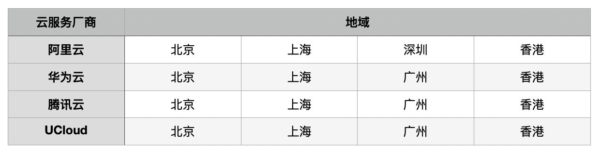
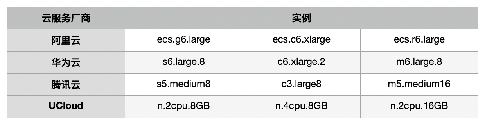

性能评测及评分规则
我们对阿里云、华为云、腾讯云、UCloud按量付费的实例进行评测，得到评分结果，以此为依据进行推荐。
由于实例类型种类繁多，我们主要选取了有代表性的3种类型，12种实例，同时也选取了各云服务厂商最新的几种实例进行持续的评测，并进行评分。
评测每周进行一次，每次评测选择不同的地域，在四个不同地域中进行评测。如下图：
评测结果见云服务评分页面。
评测实例选取
对于阿里云、华为云和腾讯云，我们在常用的通用型/标准型，计算优化型和内存优化型三种类型种各选择一种；对于UCloud，由于没有区分类型选择相同vCPU和内存的实例。主要的评测实例选取如下：
通用型/标准型的vCPU内存比为1:4，计算优化型为1:2，内存优化型为1:8。另外，也选取了各厂商最新的实例进行评测，如：阿里云的g6e.large, c6e.xlarge, r6e.large，腾讯云的SN5.MEDIUM8等等。这些评测实例的选取并不是一定的。
评测指标和评分计算
目前，我们选择了五个维度的评测指标来衡量一个实例的性能，并分别进行评分。分别是CPU性能、内存性能、磁盘性能、网络性能。对于每一个指标，设定一个基准性能参数，评测实例的分数就是该实例的评测结果与设定的基准性能参数的比值。基准性能参数的设置使得分数在100分左右。
总评分即是各个指标评分的加和。
评测程序
我们使用Sysbench评测程序分别对CPU、内存和IO进行评测并打分。对三个指标的评测都分为单线程的评测和多线程的评测，多线程评测的线程数量等于实例的CPU数量。对内存的评测又分为读和写，对IO的评测分为顺序读、顺序写、随机读、随机写和随机读写。
我们使用Netperf对内网性能进行评测，评测分为TCP和UDP两部分。